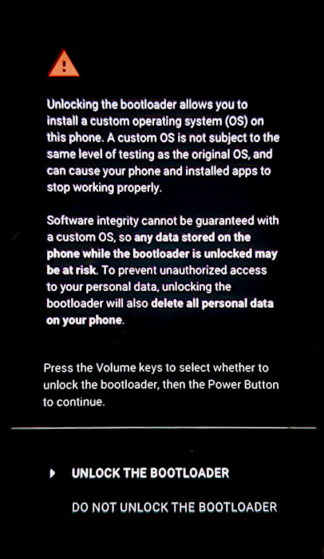

Install on Pixel 9
From a MacOS computer
Contents
Terminology
- Factory Image: This is a zip file that contains the entire CalyxOS operating system to be installed on your device.
- Flashing: On Android devices, installing a new operating system is called “flashing,” because it writes a new factory image to the device’s flash memory.
- Android Device: The device that you are installing CalyxOS on to.
- Host Computer: The MacOS computer used to send commands to the Android Device. You will connect this computer to the Android device and run device-flasher to install CalyxOS.
- Fastboot: A mode of the Android device needed to install a custom Operating System. At various stages, you will be asked to put your Android device in Fastboot mode.
Prepare your Android device
There are a few things you must do to prepare your device to accept a new operating system:
Remove SIM card
On brand new devices, especially those obtained from a carrier, it’s better to remove the SIM card from the device before starting it for the first time, to help with the “OEM Unlocking” step below.
Enable Developer Options
Settings → About Phone → tap Build number 7 times
Enable USB debugging
Settings → System → Developer Options → USB Debugging
Enable OEM Unlocking
Settings → System → Developer Options → OEM unlocking
This step might fail if there is no internet connection. In that case, connect to a WiFi network and then try again.
Start from Stock
If you are coming to CalyxOS from another custom ROM, a Pixel bootloader issue may require you to flash back to stock using Google’s web flasher in order to be able to lock the bootloader.
If your device was already running stock with a locked bootloader, or you are not coming from another custom ROM, you do not need to take any additional action.
Prepare your host computer
MacOS Settings
As a safety measure, your computer probably has Gategeeker enabled in order to prevent you from running unknown software like device-flasher.
In order to continue with the installation, you may have to temporarily disable Gatekeeper. See How to open an app that hasn’t been notarized or is from an unidentified developer for more information.
Download device-flasher
Download device-flasher.darwin
Save this executable to a new directory, where you will also later save the CalyxOS image.
Verify Digest
This is an optional step, useful for ensuring you have the correct device-flasher executable. Open a terminal on your host computer, change to the directory where you saved device-flasher, and then run:
shasum -a 256 device-flasher.darwin
And ensure the result says 4b367c1f8163cc5dab77eca882699cafeaca7e7bf711caa8a5af467e5ca31c22. This is the unique digest of the device-flasher. If it doesn’t match, then you have a corrupted or incorrect file.
Verify Signature
For the highest level of confidence, you can optionally download the signature file and then verify it.
Download factory image
Save this image in the same directory as device-flasher. This image will only work for Pixel 9 (tokay). Any attempt to install this image on a different device model may brick (destroy) the Android device.
Do not extract or rename the zip, simply copy it as-is.
Once downloaded, the next step is to verify the image. This step is optional, but verification helps ensure that you downloaded the image correctly, and that you got the correct image.
Verify Digest
To verify the image, open a terminal window on the host computer where you saved the image and run the command:
shasum -a 256 tokay-factory-25605100.zip
And ensure the result says 2852fc8b094252e46c4cef487ea0f34866c2022f3ad917bf04024bac4c679d84. This is the unique digest of the image file. If it doesn’t match, then you have a corrupted or incorrect file.
Verify Signature
For the highest level of confidence, you can optionally download the signature file and then verify image signature.
Install CalyxOS
Run device-flasher
Now you are ready to install. Ensure that both the CalyxOS image and device-flasher are in the same directory.
Step 1. Connect the USB cable between the computer and the Android device.
Step 2. Run device-flasher
Open a terminal, change to the directory with the firmware image, and run:
chmod +x device-flasher.darwin
./device-flasher.darwin
Unlock the bootloader
At some point in the installation process, it will ask you to unlock the bootloader.
NOTE: if the bootloader is already unlocked, you will not see the unlock bootloader menu and installation will proceed automatically without you needing to touch anything.
The bootloader unlock menu looks like this:

Press a volume key to select UNLOCK THE BOOTLOADER option. Then press the power key to activate that option.
Success?
Once device-flasher is finished, you should now have a fully functional CalyxOS device. If not, please see our Community page for where you can post your questions.
Troubleshooting
Error running device-flasher
If you get a mysterious error when running device-flasher, or if device-flasher hangs, it may be a USB problem. Try connecting to a different USB port on your computer (yes, not all USB ports are created equal) or a different USB cable.
How do I tell if the bootloader is locked?
In Fastboot “Device State: locked” means the bootloader is locked.
On the initial boot screen, you may also see this if the bootloader is unlocked:
The bootloader is unlocked and software integrity cannot be guaranteed. Any data stored on the device may be available to attackers. Do not store sensitive data on the device.
Back to Stock
If you would like to return to the default operating system, please see Back to Stock Android.
Security Notes
- Over-the-air Updates: CalyxOS updates are delivered over-the-air (OTA) automatically, without any manual intervention needed. However, if you'd like to manually update your CalyxOS install, see OTA.
- Security Updates: The Pixel 9 Pro Fold, 9 Pro XL, 9 Pro, 9, 8a, 8 Pro, 8, Fold, Tablet, 7a, 7 Pro, 7, 6a, 6 Pro, 6 contain the full security patch, as they are still being updated by Google.
- Security Updates: The Fairphone 4, 5, Motorola moto g32, moto g42, moto g52 stock OS follows a different security update release schedule, which usually lags behind by a month or two compared to Pixels. The CalyxOS releases for it only contain the latest fixes to the open source components, such as the OS code and the Linux kernel. Proprietary components such as the bootloader, modem firmware, and other firmware get updates as soon as the stock OS update is available.
- End-of-life: The Pixel 5a (5G), 4a (5G), 5 are no longer being updated by the manufacturer, so the CalyxOS releases for these devices only contain the fixes to the open source components, such as the OS code and the Linux kernel. Proprietary components such as the bootloader, modem firmware, and other firmware no longer get updates.